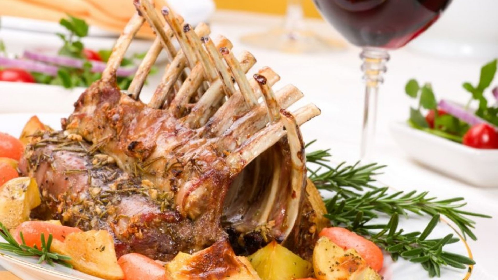

99
paştele în moldova
Paştele în Moldova
Sarbatoarea Învierii Domnului este pastrata cu strictete în Moldova, unde traditiile si obiceiurile sunt transmise din generatie în generatie.
Un element central al acestor sarbatori Pascale la moldoveni îl reprezinta
pasca. Gospodinele fac pasca dis de dimineata, dupa care o duc la Biserica
pentru a fi sfintita în noaptea de Înviere. Dimineata, credinciosii manânca din sfânta pasca în loc de anafura sau cunoscutul pasti.
După cele şapte săptămâni ale Postului Mare, cel mai lung din an, în care nu au avut voie carne, ouă şi produse lactate,
credincioşii aşteaptă cu nerăbdare bogata masă pascală.
Ouăle roşii nu au voie să lipsească de pe această masă de sărbătoare. Sunt multe legende legate de obiceiul vopsirii ouălor,
dar cea mai cunoscută spune ca Maica Domnului a aşezat coşul cu ouă lângă crucea pe care era răstignit Iisus şi
acestea au fost înroşite de sângele care picura din rănile Mântuitorului.În trecut gospodinele vopseau ouăle cu coji de ceapă pentru un roșu intens. Ouale se
fierb direct in apa colorata cu aceste coji, deci nu trebuie fierte inainte de vopsire!

Mielul este simbolul Mântuitorului, care a fost sacrificat pentru a salva omenirea.
Indiferent de forma în care este preparat – drob, fritură, ciorbă, stufat etc. - mielul nu poate lipsi de pe masa de Paşte.
Printre bucatele principale enumerate mai sus, iată încă o listă cu bunătăţi pe care le puteţi găsi pe masa de sărbătoare:
1. Răcituri;
2. Olivie;
3. Bătute;
4. Pârjoale;
5. Sarmale;
6. Peşte umplut;
7. Găină umplută;
8. Platourile cu caşcaval şi brânză de oi;
9. Plăcinte.
10. Cozonac.